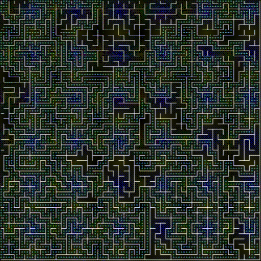

English | Русский

Поиск пути и генерация лабиринтов
library-brainmap — header-only библиотека на C++17 для генерации лабиринтов и поиска пути на сетке «нейронов». В комплекте есть интерактивный визуализатор на ImGui (guitest), который анимирует каждый шаг поиска.
Возможности
- Алгоритмы поиска пути (brain::pathfinder_algo): A*, Dijkstra, поиск в ширину, поиск в глубину, жадный поиск (Greedy Best-First), Jump Point Search (JPS), Theta*, IDA*.
- Flow Field (карта Дейкстры, brain::flow_field): один поиск от цели даёт каждой клетке стоимость и следующий шаг.
- Иерархический поиск (brain::hpa_graph): кластерный HPA* в точном и разреженном режимах.
- Однонаправленный и двунаправленный поиск (brain::search_mode) для A*, Dijkstra и BFS.
- Эвристики (brain::heuristic_method): Манхэттен (по умолчанию), Чебышёв, Octile, Hypot, Pythagorean и пользовательская.
- 13 генераторов лабиринтов (brain::maze_algorithm): Recursive Backtracker, Recursive Division, Прим, Краскал, Эллер, Hunt-and-Kill, Binary Tree, Sidewinder, Олдос-Бродер, Вильсон, Cellular Automata и другие.
- Собственная стоимость шагов, соседство по 4 или 8 направлениям, необязательное срезание углов.
- Сохранение и загрузка всей карты.
Быстрый старт
#include <brain_map.hpp>
using namespace brain;
int main()
{
brain_map map(51, 51);
map.create_maze_ex(maze_algorithm::RecursiveBacktracer, {0, 0}, {50, 50});
brain_map::result_site result;
bool found = map.find(pathfinder_algo::AStar, result,
the_site {0, 0},
the_site {50, 50},
search_mode::UniDirectional);
if (found)
{
for (
const the_site &p : result.connections)
;
}
}
Определения brain_map.hpp:121
Каждый вызов find() начинает с чистого состояния поиска, стены (блокировки) сохраняются. Алгоритм по умолчанию можно задать один раз через brain::basic_brain_map::set_pathfinder().
Алгоритмы вкратце
| Алгоритм | Оптимальный путь | Эвристика | Применение |
| A* | да (при допустимой эвристике) | да | универсальный и самый быстрый |
| Dijkstra | да | нет | карты с весами без хорошей эвристики |
| BFS | при равной стоимости шагов | нет | простые карты без весов |
| DFS | нет | нет | проверка достижимости, визуализация |
| Greedy Best-First | нет | да (только она) | очень быстрые «достаточно хорошие» пути |
| Jump Point Search | да | да | быстрый поиск с пропуском симметричных путей на 8-связной сетке |
| Theta* | близкий к оптимальному (any-angle) | да | сглаженные пути по прямой видимости |
| IDA* | да | да | итеративное углубление с отсечением по порогу |
| Flow Field | да | нет | много агентов идут к одной цели |
| HPA* (hpa_graph) | точный или разреженный | да | многократные запросы на больших статичных картах |
Примечание: по умолчанию используется эвристика Манхэттена: она точна для стандартной стоимости шагов (прямой шаг 1, диагональный 2), поэтому A* даёт ту же стоимость, что и Dijkstra. Эвристика Pythagorean (квадрат расстояния) быстрая, но недопустимая.
Flow field для множества агентов
brain::flow_field field;
std::vector<brain::the_site> path;
field.
path({3, 7}, path);
bool path(const ISite &from, list_type &out) const
the whole path from a cell to the goal (both ends included)
Определения brain_map.hpp:147
ISite direction(const ISite &site) const
the unit step (dx, dy) toward the goal, (0, 0) at the goal or if there is no path
Определения brain_map.hpp:132
bool build(map_type &map, const ISite &goal)
build the field
Определения brain_map.hpp:38
После изменения карты вызовите build() снова.
Иерархический поиск (HPA*)
brain::hpa_graph режет карту на кластеры и ищет путь по небольшому абстрактному графу входов в кластеры. Граф точный: стоимость совпадает с Dijkstra, но построение требует времени и памяти (каждая клетка с шагом в другой кластер становится узлом), поэтому выгоден при множестве запросов на статичной карте. После изменения карты вызовите build() снова.
brain::hpa_graph graph;
graph.
build(map, 32,
true);
std::vector<brain::the_site> path;
graph.
find({0, 0}, {1023, 1023}, path);
bool build(map_type &map, int cluster_size=8, bool sparse=false)
build the abstract graph
Определения brain_map.hpp:44
bool find(const ISite &from, const ISite &to, list_type &out, weight_t *cost_out=nullptr)
find a path
Определения brain_map.hpp:226
Сборка
cmake -B build -DCMAKE_BUILD_TYPE=Release
cmake --build build
ctest --test-dir build
Справочник API
Начните с класса brain::basic_brain_map (псевдоним brain::brain_map) и перечислений brain::pathfinder_algo, brain::search_mode, brain::heuristic_method, brain::maze_algorithm.
 1.15.0
1.15.0